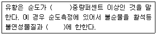
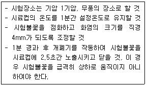
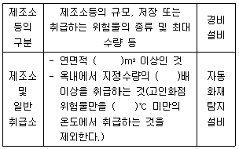
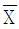

위험물기능장 (2017-03-05 기출문제)
1과목: 임의구분
1. 고온에서 용융된 유황과 수소가 반응하였을 때 현상으로 옳은 것은?
- 발열하면서 H2S가 생성된다.
- 흡열하면서 H2S가 생성된다.
- 발열은 하지만 생성물은 없다.
- 흡열은 하지만 생성물은 없다.
(정답률: 88%)

2. 위험물안전관리자의 선임신고를 허위로 한 자에게 부과하는 과태료의 금액은?(2021년 10월 21일 개정된 규정 적용됨)
- 200만원
- 300만원
- 500만원
- 1000만원
(정답률: 84%)
3. 위험물안전관리법령상 간이저장탱크에 설치하는 밸브 없는 통기관의 설치 기준에 대한 설명으로 옳은 것은?
- 통기관의 지름은 20mm 이상으로 한다.
- 통기관은 옥내에 설치하고 선단의 높이는 지상 1.5m 이상으로 한다.
- 가는 눈의 구리만 등으로 인화방지장치를 한다.
- 통기관의 선단은 수평면에 대하여 아래로 35도 이상 구부려 빗물 등이 들어가지 않도록 한다.
(정답률: 84%)
4. 다음 제2류 위험물 중 지정수량이 나머지 셋과 다른 하나는?
- 철분
- 금속분
- 마그네슘
- 유황
(정답률: 88%)
5. 순수한 과산화수소의 녹는점과 끓는점을 70wt% 농도의 과산화수소와 비교한 내용으로 옳은 것은?
- 순수한 과산화수소의 녹는점은 더 낮고, 끓는점은 더 높다.
- 순수한 과산화수소의 녹는점은 더 높고, 끓는점은 더 낮다.
- 순수한 과산화수소의 녹는점과 끓는점이 모두 더 낮다.
- 순수한 과산화수소의 녹는점과 끓는점이 모두 더 높다.
(정답률: 71%)
6. 인화알루미늄의 위험물안전관리법령상 지정수량과 인화알루미늄이 물과 반응하였을 때 발생하는 가스의 명칭을 옳게 나타낸 것은?
- 50kg, 포스핀
- 50kg, 포스겐
- 300kg, 포스핀
- 300kg, 포스겐
(정답률: 88%)
7. 다음은 위험물안전관리법령에서 정한 유황이 위험물로 취급되는 기준이다. ()안에 알맞은 말을 차례대로 나타낸 것은?

- 40, 가연성물질
- 40, 수분
- 50, 가연성물질
- 60, 수분
(정답률: 87%)
8. 다음 물질 중 증기 비중이 가장 큰 것은?
- 이황화탄소
- 시안화수소
- 에탄올
- 벤젠
(정답률: 75%)
9. 위험물안전관리법령상 이송취급소의 위치ㆍ구조 및 설비의 기준에서 배관을 지하에 매설하는 경우에는 배관은 그 외면으로부터 지하가 및 터널까지 몇 m 이상의 안전거리를 두어야 하는가? (단, 원칙적인 경우에 한한다.)
- 1.5m
- 10m
- 150m
- 300m
(정답률: 78%)
10. 위험물안전관리법령상 주유취급소의 주위에는 자동차 등이 출입하는 쪽 외의 부분에 높이 몇 m 이상의 담 또는 벽을 설치하여야 하는가? (단, 주유취급소의 인근에 연소의 우려가 있는 건축물이 없는 경우이다.)
- 1
- 1.5
- 2
- 2.5
(정답률: 76%)
11. 50%의 N2와 50%의 Ar으로 구성된 소화약제는?
- HFC-125
- IG-100
- HFC-23
- IG-55
(정답률: 94%)
12. 분자량은 약 72.06이고 증기비중이 약 2.48인 것은?
- 큐멘
- 아크릴산
- 스타이렌
- 히드라진
(정답률: 53%)
13. 다음 중 위험물안전관리법의 적용제외 대상이 아닌 것은?
- 항공기로 위험물을 국외에서 국내로 운반하는 경우
- 철도로 위험물을 국내에서 국내로 운반하는 경우
- 선박(기선)으로 위험물을 국내에서 국외로 운반하는 경우
- 국제해상위험물규칙(IMDFG Code)에 적합한 운반용기에 수납된 위험물을 자동차로 운반하는 경우
(정답률: 86%)
14. 위험물안전관리법령상 간이탱크저장소의 설치기준으로 옳지 않은 것은?
- 하나의 간이탱크저장소에 설치하는 간이저장탱크의 수는 3 이하로 한다.
- 간이저장탱크의 용량은 600L 이하로 한다.
- 간이저장탱크는 두께 2.3mm 이상의 강판으로 제작한다.
- 간이저장탱크에는 통기관을 설치하여야 한다.
(정답률: 87%)
15. 아염소산나트륨을 저장하는 곳에 화재가 발생하였다. 위험물안전관리법령상 소화설비로 적응성이 있는 것은?
- 포소화설비
- 불활성가스소화설비
- 할로겐화합물소화설비
- 탄산수소염류 분말소화설비
(정답률: 68%)
16. 소금물을 전기분해하여 표준상태에서 염소가스 22.4L를 얻으려면 소금 몇 g이 이론적으로 필요한가? (단, 나트륨의 원자량은 23이고, 염소의 원자량은 35.5이다.)
- 18g
- 36g
- 58g
- 117g
(정답률: 66%)
17. NH4NO3에 대한 설명으로 옳지 않은 것은?
- 조해성이 있기 때문에 수분이 포함되지 않도록 포장한다.
- 단독으로도 급격한 가열로 분해하여 다량의 가스를 발생할 수 있다.
- 무취의 결정으로 알코올에 녹는다.
- 물에 녹을 때 발열반응을 일으키므로 주의한다.
(정답률: 78%)
18. 과염소산과 질산의 공통성질로 옳은 것은?
- 환원성물질로서 증기는 유독하다.
- 다른 가연물의 연소를 돕는 가연성물질이다.
- 강산이고 물과 접촉하면 발열한다.
- 부식성은 적으나 다른 물질과 혼촉발화 가능성이 높다.
(정답률: 80%)
19. 위험물안전관리법령상 위험등급 Ⅰ인 위험물은?
- 과요오드산칼륨
- 아조화합물
- 니트로화합물
- 질산에스테르류
(정답률: 82%)
20. 이동탱크저장소에 의한 위험물의 장거리 운송시 2명 이상이 운전하여야 하나 다음 중 그렇게 하지 않아도 되는 위험물은?
- 탄화알루미늄
- 과산화수소
- 황린
- 인화칼슘
(정답률: 55%)
2과목: 임의구분
21. 물과 반응 하였을 때 생성되는 탄화수소가스의 종류가 나머지 셋과 다른 하나는?
- Be2C
- Mn3C
- MgC2
- Al4C3
(정답률: 59%)
22. 액체위험물의 옥외저장탱크에는 위험물의 양을 자동적으로 표시할 수 있는 계량장치를 설치하여야 한다. 그 종류로서 적당하지 않은 것은?
- 기밀부유식 계량장치
- 증기가 비산하는 구조의 부유식 계량장치
- 전기압력자동방식에 의한 자동계량장치
- 방사성동위원소를 이용한 방식에 의한 자동계량장치
(정답률: 80%)
23. 위험물안전관리법령상 스프링클러헤드의 설치기준으로 틀린 것은?
- 개방형 스프링클러헤드는 헤드 반사판으로부터 수평방향으로 30cm의 공간을 보유하여야 한다.
- 폐쇄형 스프링클러헤드의 반사판과 헤드의 부착면과의 거리는 30cm 이하로 한다.
- 폐쇄형 스프링클러헤드 부착장소의 평상시 최고 주위온도가 28℃ 미만인 경우 58℃미만의 표시온도를 갖는 헤드를 사용한다.
- 개구부에 설치하는 폐쇄형 스프링클러헤드는 해당 개구부의 상단으로부터 높이 30cm 이내의 벽면에 설치한다.
(정답률: 76%)
24. 다음 중 가연성 물질로만 나열된 것은?
- 질산칼륨, 황린, 니트로글리세린
- 니트로글리세린, 과염소산, 탄화알루미늄
- 과염소산, 탄화알루미늄, 아닐린
- 탄화알루미늄, 아닐린, 포름산메틸
(정답률: 74%)
25. 위험물안전관리법령상 알코올류와 지정수량이 같은 것은?
- 제1석유류(비수용성)
- 제1석유류(수용성)
- 제2석유류(비수용성)
- 제2석유류(수용성)
(정답률: 80%)
26. 다음 제1류 위험물 중 융점이 가장 높은 것은?
- 과염소산칼륨
- 과염소산나트륨
- 염소산나트륨
- 염소산칼륨
(정답률: 70%)
27. 위험물제조소등의 안전거리를 단축하기 위하여 설치하는 방화상 유효한 담의 높이는 H＞pD2+a인 경우 h=H-p(D2-d2)에 의하여 산정한 높이 이상으로 한다. 여기서 d가 의미하는 것은?
- 제조소등과 인접 건축물과의 거리(m)
- 제조소등과 방화상 유효한 담과의 거리(m)
- 제조소등과 방화상 유효한 지붕과의 거리(m)
- 제조소등과 인접 건축물 경계선과의 거리(m)
(정답률: 85%)
28. 위험물안전관리법령상 자동화재탐지설비의 하나의 경계구역의 면적은 해당 건축물 그 밖의 공작물의 주요한 출입구에서 그 내부의 전체를 볼 수 있는 경우에 있어서는 그 면적을 몇 m2이하로 할 수 있는가?
- 500
- 600
- 1,000
- 2,000
(정답률: 75%)
29. 위험물안전관리법령상 연소산칼륨을 금속제 내장용기에 수납하여 운반하고자 할 때 이 용기의 최대 용적은?
- 10L
- 20L
- 30L
- 40L
(정답률: 78%)
30. 다음 위험물을 저장할 때 안정성을 높이기 위해 사용할 수 있는 물질의 종류가 나머지 셋과 다른 하나는?
- 나트륨
- 이황화탄소
- 황린
- 니트로셀룰로오스
(정답률: 71%)
31. 다음 중 나머지 셋과 위험물의 유별 구분이 다른 것은?
- 니트로글리세린
- 니트로셀룰로오스
- 셀룰로이드
- 니트로벤젠
(정답률: 76%)
32. NH4CIO3에 대한 설명으로 틀린 것은?
- 산화력이 강한 물질이다.
- 조해성이 있다.
- 충격이나 화재에 의해 폭발할 위험이 있다.
- 폭발시 CO2, HCl, NO2 가스를 주로 발생한다.
(정답률: 83%)
33. 위험물안전관리법령상 불활성가스소화설비가 적응성을 가지는 위험물은?
- 마그네슘
- 알칼리금속
- 금수성물질
- 인화성고체
(정답률: 70%)
34. 니트로글리세린에 대한 설명으로 옳지 않은 것은?
- 순수한 것은 상온에서 푸른색을 띤다.
- 충격마찰에 매우 민감하므로 운반 시 다공성 물질에 흡수시킨다.
- 겨울철에는 동결할 수 있다.
- 비중은 약 1.6으로 물보다 무겁다.
(정답률: 70%)
35. 물분무소화에 사용된 20℃의 물 2g이 완전히 기화되어 100℃의 수증기가 되었다면 흡수된 열량과 수증기 발생량은 약 얼마인가? (단, 1기압을 기준으로 한다.)
- 1238cal, 2400mL
- 1238cal, 3400mL
- 2476cal, 2400mL
- 2476cal, 3400mL
(정답률: 78%)
36. 디에틸에테르(diethyl ether)의 화학식으로 옳은 것은?
- C2H5C2H5
- C2H5OC2H5
- C2H5COC2H5
- C2H5COOC2H5
(정답률: 79%)
37. 에틸알코올의 산화로부터 얻을 수 있는 것은?
- 아세트알데히드
- 포름알데히드
- 디에틸에테르
- 포름산
(정답률: 78%)
38. 아연분이 NaOH 수용액과 반응하였을 때 발생하는 물질은?
- H2
- O2
- NaO2
- NaZn
(정답률: 75%)
39. 금속칼륨을 등유 속에 넣어 보관하는 이유로 가장 적합한 것은?
- 산소의 발생을 막기 위해
- 마찰시 충격을 방지하려고
- 제4류 위험물과의 혼재가 가능하기 때문에
- 습기 및 공기와의 접촉을 방지하려고
(정답률: 92%)
40. 다음 중 Mn의 산화수가 +2인 것은?
- KMnO4
- MnO2
- MnSO4
- K2MNO4
(정답률: 74%)
3과목: 임의구분
41. 다음 중 위험물 중 동일 질량에 대해 지정수량의 배수가 가장 큰 것은?
- 부틸리튬
- 마그네슘
- 인화칼슘
- 황린
(정답률: 64%)
42. 다음 물질 중 조연성 가스에 해당하는 것은?
- 수소
- 산소
- 아세틸렌
- 질소
(정답률: 85%)
43. 직경이 500mm인 관과 300mm인 관이 연결되어 있다. 직경 500mm관에서의 유속이 3m/s라면 300mm 관에서의 유속은 약 몇 m/s인가?
- 8.33
- 6.33
- 5.56
- 4.56
(정답률: 65%)
44. 탄화알루미늄이 물과 반응하였을 때 발생하는 가스는?
- CH4
- C2H2
- C2H6
- CH3
(정답률: 71%)
45. 어떤 화합물을 분석한 결과 질량비가 탄소 54.55%, 수소 9.10%, 산소 36.35% 이고, 이 화합물 1g은 표준상태에서 0.17L라면 이 화합물의 분자식은?
- C2H4O2
- C4H8O4
- C4H8O2
- C6H12O3
(정답률: 71%)
46. 위험물안전관리법령상 물분무소화설비가 적응성이 있는 대상물이 아닌 것은?
- 전기설비
- 철분
- 인화성고체
- 제4류 위험물
(정답률: 73%)
47. 벽ㆍ기둥 및 바닥이 내화구조로 된 옥내저장소의 건축물에서 저장 또는 취급하는 위험물의 최대 수량이 지정수량의 15배일 때 보유공지 너비기준으로 옳은 것은?
- 0.5m 이상
- 1m 이상
- 2m 이상
- 3m 이상
(정답률: 56%)
48. 포름산(formic acid)의 증기비중은 약 얼마인가?
- 1.59
- 2.45
- 2.78
- 3.54
(정답률: 69%)
49. 위험물안전관리법령상 수납하는 위험물에 따라 운반용기의 외부에 표시하는 주의사항을 모두 나타낸 것으로 옳지 않은 것은?
- 제3류 위험물 중 금수성물질 : 물기엄금
- 제3류 위험물 중 자연발화성물질 : 화기엄금 및 공기접촉엄금
- 제4류 위험물 : 화기엄금
- 제5류 위험물 : 화기주의 및 충격주의
(정답률: 77%)
50. 다음은 위험물안전관리법령에 따른 인화점 측정시험 방법을 나타낸 것이다. 어떤 인화점측정기에 의한 인화점 측정시험인가?

- 태크밀폐식 인화점측정기
- 신속평형법 인화점측정기
- 클리브랜드개방컵 인화점측정기
- 침강평형법 인화점측정기
(정답률: 76%)
51. 위험물안전관리법령상 제조소등별로 설치하여야 하는 경보설비의 종류 중 자동화재탐지설비에 해당하는 표의 일부이다. ()에 알맞은 수치를 차례대로 나타낸 것은?

- 150, 100, 100
- 500, 100, 100
- 150, 10, 100
- 500, 10, 70
(정답률: 65%)
52. 각 위험물의 지정수량을 합하면 가장 큰 값을 나타내는 것은?
- 중크롬산칼륨+아염소산나트륨
- 중크롬산나트륨+아질산칼륨
- 과망간산나트륨+염소산칼륨
- 요오드산칼륨+아질산칼륨
(정답률: 76%)
53. 다음은 위험물안전관리법령에서 규정하고 있는 사항이다. 규정내용과 상이한 것은?
- 위험물탱크의 층수ㆍ수압시험은 탱크의 제작이 완성된 상태여야 하고, 배관 등의 접속이나 내ㆍ외부 도장작업은 실시하지 아니한 단계에서 물을 탱크 최대사용높이 이상까지 가득 채워서 실시한다.
- 암반탱크의 내벽을 정비하는 것은 이 위험물저장소에 대한 변경허가를 신청할 때 기술검토를 받지 아니하여도 되는 부분적 변경에 해당한다.
- 탱크안전성능시험은 탱크내부의 중요부분에 대한 구조, 불량접합사항까지 검사하는 것이 필요하므로 탱크를 제작하는 현장에서 실시하는 것을 원칙으로 한다.
- 용량 1000kL인 원통종형탱크의 층수시험은 물을 채운 상태에서 24시간이 경과한 후 지반침하가 없어야 하고, 또한 탱크의 수평도와 수직도를 측정하여 이 수치가 법정기준을 충족하여야 한다.
(정답률: 72%)
54. 1몰의 트리에틸알루미늄이 충분한 양의 물과 반응하였을 때 발생하는 가연성 가스는 표준상태를 기준으로 몇 L인가?
- 11.2
- 22.4
- 44.8
- 67.2
(정답률: 53%)
55. 3σ법의

관리도에서 공정이 관리상태에 있는데도 불구하고 관리상태가 아니라고 판정하는 제1종 과오는 약 몇 %인가?- 0.27
- 0.54
- 1.0
- 1.2
(정답률: 65%)
56. 설비보전조직 중 지역보전(area maintenance)의 장ㆍ단점에 해당하지 않는 것은?
- 현장 왕복 시간이 증가한다.
- 조업요원과 지역보전요원과의 관계가 밀접해진다.
- 보전요원이 현장에 있으므로 생산 본위가 되며 생산의욕을 가진다.
- 같은 사람이 같은 설비를 담당하므로 설비를 잘 알며 충분한 서비스를 할 수 있다.
(정답률: 83%)
57. 워크 생플링에 관한 설명 중 틀린 것은?
- 워크 샘플링은 일명 스냅리딩(Snap Reading)이라 불린다.
- 워크 샘플링은 스톱워치를 사용하여 관측대상을 순간적으로 관측하는 것이다.
- 워크 샘플링은 영국의 통계학자 L.H.C. Tippet가 가동률 조사를 위해 창안한 것이다.
- 워크 샘플링은 사람의 상태나 기계의 가동상태 및 작업의 종류 등을 순간적으로 관측하는 것이다.
(정답률: 75%)
58. 부적합품률이 20%인 공정에서 생산되는 제품을 매시간 10개씩 샘플링 검사하여 공정을 관리하려고 한다. 이 때 측정되는 시료의 부적합품 수에 대한 기댓값과 분산은 약 얼마인가?
- 기댓값 : 1.6, 분산 : 1.3
- 기댓값 : 1.6, 분산 : 1.6
- 기댓값 : 2.0, 분산 : 1.3
- 기댓값 : 2.0, 분산 : 1.6
(정답률: 64%)
59. 설비배치 및 개선의 목적을 설명한 내용으로 가장 관계가 먼 것은?
- 재가공품의 증가
- 설비투자 최소화
- 이동거리의 감소
- 작업자 부하 평준화
(정답률: 82%)
60. 검사의 종류 중 검사공정에 의한 분류에 해당되지 않는 것은?
- 수입검사
- 출하검사
- 출장검사
- 공정검사
(정답률: 88%)